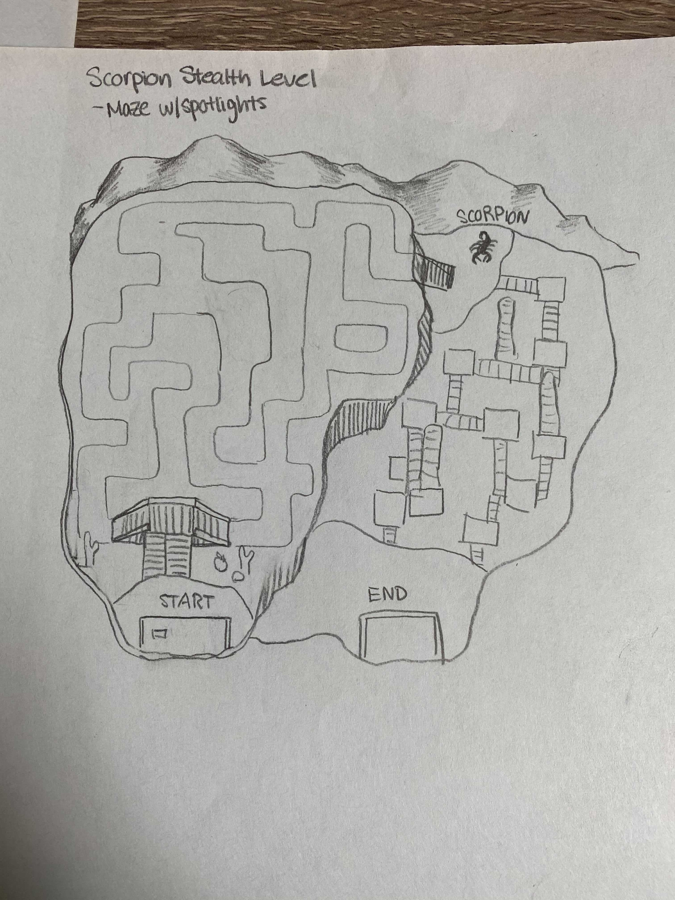
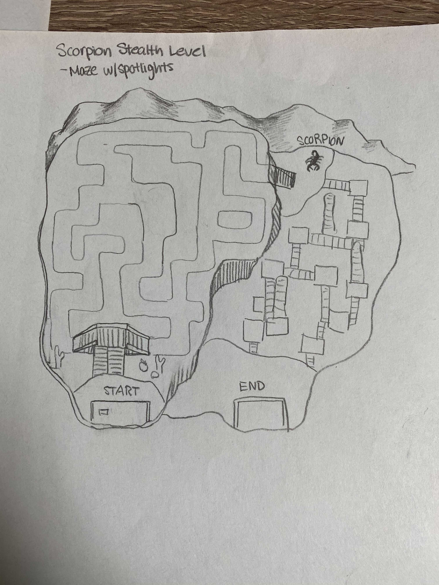

Summary
For Timebox Four, one of the biggest priorities was refining our current levels and puzzles by adding more UI indicators, particle effects, fixing any bugs, and implementing different cameras. We also wanted to finish up the remaining levels for the Safari, Polar, and Desert exhibits. We also started planning out the animals for the Jungle Exhibit.
Concept Ideas and Design
Below are some concept ideas from designing the lion/cave level, how to refine the level select area, and the design for the scorpion level.
 

What We Accomplished
Reindeer Level
The reindeer level is an open level where you must find all twenty-five puzzle pieces in order to escape. The twenty-five puzzle pieces are scattered around the map, and you're able to use the reindeer's special ability of flying in order to reach high places. Once you find all the pieces, you must solve the jigsaw puzzle.
Scorpion Level
The scorpion level is a stealth based level where you try to avoid the spotlights. If you are in the direct beam of a spotlight, then you get reset to the last checkpoint. To avoid spotlights, you can hide under bridges or run away from the moving light. In this level, you can use the scorpion to place a block to help aid jumps.
Wolf Level
The wolf level is based around combat as you climb up a mountain and defeat ghosts. You are able to switch to the wolf which has the special ability of summoning a pack of wolves to attack the closest enemy. Once you reach the top of the mountain, you'll be able to escape.
Lion/Cave Level
The lion level is also based around combat as you go through three different sections to reach the cave at the end. You must defeat all the enemies in each section before you can move on. In order to lower the gate in each section, you complete the minefield puzzle. Once you are in the cave, you will use all of the safari animals and their special abilities to defeat the evil lion.
Jungle Animals
We implemented the last three animals for our game which are:
- Gorilla: Grapple hook shot ability
- Viper: Speed boost ability
- Crocodile: Mud shot ability
Camera Adjustments
For each level, we created custom cameras that would change based on the animal you were playing as. We also implemented static cameras for certain puzzles such as the ones in the elephant level. We also worked on camera pans and transitions after a certain event had been triggered.
Level Refinements
The following levels were refined:
- Level Select Zoo Area: Animal appears when you go near a level and indicators as to whether or not you have completed a level. The animals you helped escape will also be in the level select area.
- Polar Bear Level: Pressure plate bugs fixed, connected section one to section two, and added particle indicators.
- Penguin Level: Snow effects added, respawning, and level ending added.
- Desert Slide Level: Cinematic cameras implemented and level ending collectible added.
- Elephant Level: Cinematic cameras implemented and level ending added.
- Desert Hare Level: Player can jump on moving platforms, UI improvements, and particle effects.
- Zebra Level: Skybox added, lighting improved, particle indicators added, and respawning bug fixed.
Puzzle Refinements
The following puzzles were refined:
- Mastermind: Added shapes to differentiate each color
- Lights Out: Added animals to differentiate each color
Combat Refinements
We made improvements to combat including:
- Auto-targeting: Player will face towards a close enemy when attacking
- A stun for a long perion when the lion special is activated
- Bug fix where enemies and player have negative health
- Player has death animation and respawn upon reaching zero health
- Enemies will ignore colliders of player and each other
- Enemies have a changeable aggro distance for different levels
- New ghost enemies added
Team Organization
The roles during this timebox were the following:
- Maddy Carek: Reindeer Level Design & Level Refinement
- Alex Chan: Level Refinement & Jungle Animals
- Von Mbah: Lion/Cave Level
- Sara Miskus: Level Refinement & Scoprion Level Design
- Eric Sullivan: Wolf Level & Combat Refinement
- Jack Weiner: Level Refinement & Cameras
Future Plans
- Implement jungle levels
- Further level refinement